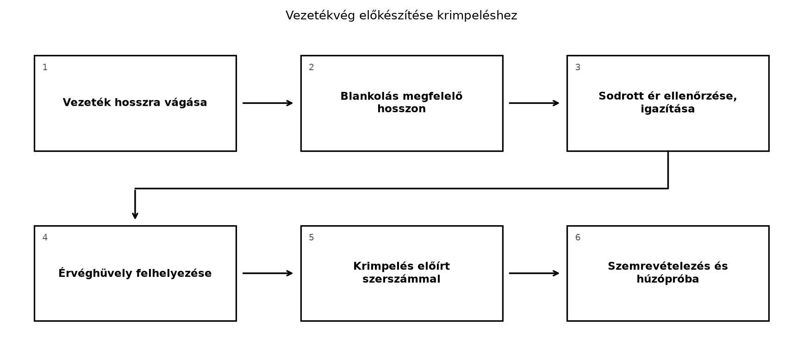

Statikus változat (mint a PDF-ben)
Egy elosztószekrényben a sorkapocs megbízhatósága nem a csavar meghúzásánál kezdődik, hanem már a munkapadon. Ha a hajlékony vezető végét rosszul készíted elő – kihagysz néhány rézszálat, vagy laza marad a krimp –, akkor a csatlakozás átmeneti ellenállása megnő. Az eredmény melegedés, idővel kilazuló, esetleg besült kötés, ami hibaforrás lehet a teljes berendezésben. Ebben az alfejezetben a vezetékmegmunkálás kézműves alapjait tanulod meg: a munkahely előkészítését, a vezeték hosszra vágását, a blankolást, az érvéghüvely és kábelsaru kiválasztását, krimpelését és ellenőrzését. Ez az a tudás, amelyet a későbbi kötéstechnikai és sorkapcsos gyakorlatok során minden alkalommal alkalmazni fogsz.
Képzelj el egy munkapadot, amelyen három, azonos keresztmetszetű, hajlékony vezetővég fekszik. Az első előkészített vég mintaszerű: a szigetelés simán, minden sérülés nélkül el van távolítva, a sodrott ér szálai párhuzamosak, és az érvéghüvely szorosan illeszkedik. A másodiknál a blankolási él megcsípte a rézszálakat; a harmadiknál pedig több vékony szál kihajlik az érvéghüvely gallérja alól. A későbbi sorkapocsba fogásnál az első kötés tartós lesz, a másodiknál csökkenhet a vezető keresztmetszete, a harmadiknál pedig a kihagyott szálak rövidzárlatot vagy bizonytalan érintkezést okozhatnak. A három vezetővéget – és egy negyedik gyakori hibát, a túl rövid blankolást – az alábbi oldalnézeti metszet hasonlítja össze. Helyes állapotban a blankolt szakasz a fémcső hosszával egyezik, a szálak a cső végéig érnek, a szigetelés a műanyag gallérba ér, és a krimp a fémcsövön van. Túl rövid blankolásnál a cső vége üres marad; megcsípett szálnál csökken a vezető keresztmetszete; a gallér alól kimaradt szál pedig zárlatot vagy érintésveszélyt okozhat.
Az ábra szemléltető, nem méretarányos; a fémcső 12 mm-es hossza csak példa, a valós értéket a hüvely gyártói adata adja. A HTML-kiadásban az ábra lépésenként lejátszható (blankolás, szálrendezés, hüvely felhúzása, krimpelés, húzópróba), és minden lépésnél a helyes és egy hibás változat látszik.
A teljes folyamatot áttekintő lépéssorozat segít, hogy semmilyen ellenőrzést ne hagyj ki:

A vezetékmegmunkálás akkor lesz gyors és biztonságos, ha a munkahely rendezett, a szerszámok a kezedhez esnek, és a munkadarab stabilan rögzíthető. A munkapad legyen tiszta, száraz, jól megvilágított, és legyen rajta annyi hely, hogy a vezeték ne csavarodjon vissza a vágóeszköz alá. A szerszámok közül a leggyakrabban használtakat – blankoló fogó, krimpelő fogó, oldalcsípő fogó, kés, hosszmérő, esetleg huzallehúzó – helyezd a domináns kezedhez közel, de úgy, hogy a vágóél ne sérthessen meg semmit.
Biztonsági korlát. A feladat tanműhelyi (törpefeszültségű) környezetre vagy jogosult oktató felügyeletére vonatkozik; hálózati feszültségen önállóan ne végezd.
Szabály. Minden szerelési, bekötési, mérési vagy hibakeresési munka előtt a feszültségmentesítés öt biztonsági szabályát kell alkalmazni: 1. lekapcsolás, 2. visszakapcsolás elleni biztosítás, 3. feszültségmentesség ellenőrzése, 4. földelés és rövidre zárás, 5. a szomszédos, feszültség alatti részek lefedése.
Törpefeszültségű tanműhelyi gyakorlaton a 4. és 5. lépés gyakran nem értelmezhető, mert nincs veszélyes szomszédos hálózati feszültség, de az első három lépés akkor is kötelező: győződj meg arról, hogy a munkadarab feszültségmentes, és a visszakapcsolást fizikailag akadályozd meg, illetve jelezd a munkaterületet.
Megjegyzés. A vágó- és krimpelő szerszámok vágóéle és nyomófeje kézsérülést okozhat, ezért használat közben a másik kéz soha ne legyen a szerszám útjában. A szigetelt szerszámok szigetelése a hálózati feszültség ellen véd, de nem ad felhatalmazást feszültség alatti munkára; sérült szigetelésű szerszámot nem szabad használni.
A vezeték hosszra vágásának alapelve: a tervezett bekötési hosszhoz adj tartalékot, de ne hagyj feleslegesen hosszú, kuszán tekergő maradékot. Általánosan elfogadott, hogy a munkadarab végén a blankolandó és bekötendő részhez képest nagyjából 50–100 mm tartalék elegendő, ha a kötést később esetleg újra kell készíteni (ellenőrizendő: a konkrét berendezés gyártói előírása). Ha a vezeték egy elosztószekrényben fut, a tartalék hosszát úgy kell megválasztani, hogy a szerelés után a vezeték ne feszüljön, de ne is csavarodjon.
Blankolásnak nevezzük a szigetelés eltávolítását a vezetőről meghatározott hosszon, úgy, hogy a vezető anyaga sérülésmentes maradjon. A blankolási hossz a csatlakoztatandó elem típusától függ: érvéghüvelyes bekötésnél a blankolási hossz egyezzen meg a hüvely fémcsövének hosszával (a vezető a hüvely végével egy síkban legyen, vagy legfeljebb kb. 0,5 mm-rel nyúljon túl rajta; ellenőrizendő: gyártói adat); a szigetelés a műanyag gallérba ül be, a krimp csak a fémcsövet és a rézszálakat éri; kábelsaru esetén a hossz a saru csőhüvelyeéhez és a csavarhoz igazodik.
Gyakorlat. A blankoláshoz a vezető keresztmetszetének megfelelő blankoló fogót válassz. Hajlékony, sodrott érnél a blankoló vágóéle ne vágja át a szálakat; ha a fogó beállítása túl erős, a külső szálak megsérülnek. Tömör érnél a blankoló gyakran automatikusan a réz átmérőjéhez igazodik.
Sodrott ér kezelése. A blankolás után a sodrott vezető szálai rendszerint enyhén szétnyílnak. A szálakat kézzel vagy csipesz segítségével rendezd párhuzamos állásba, és finoman csavard össze a sodrás eredeti irányába, hogy a vég keresztmetszete kerek és egységes maradjon. Ha bármely szál megsérült vagy eltört, a vezetőt újra kell blankolni, mert a megmaradt szálak keresztmetszete már nem felel meg a névleges értéknek.
Definíció. A kihagyott szál olyan rézszál, amely nem kerül be az érvéghüvelybe vagy kábelsaru csőhüvelyébe, hanem oldalirányban kihajlik. A kihagyott szál csökkenti a tényleges érintkezési keresztmetszetet, rövidzárlatot okozhat, és a húzópróbánál azonnal kimutatható.
Példa. Egy névleges keresztmetszetű hajlékony vezető blankolásakor a sodrott érszerkezet körülbelül 50 darab, egyenként nagyjából átmérőjű szálból áll (ellenőrizendő: a gyártói adat szerint). Ha csak három-négy szálat kihagysz, az érintkező keresztmetszet elenyésző mértékben csökken, de a valós hibakockázat az, hogy a kihagyott szálak a szomszédos kapocshoz érnek, vagy a hüvely széle alá szorulva a húzópróba során kicsúsznak. Ezért a kihagyott szál mindig hibának számít.
Definíció. Az érvéghüvely olyan, rézből készült, ónozott vagy ezüstözött, cső alakú szerelvény, amelyet a sodrott vezető végére húznak, majd krimpeléssel rögzítenek. Célja, hogy a finom rézszálakat összetartsa, megvédje a csavar közvetlen nyomásától, és homogén, jól csatlakoztatható vezetővéget hozzon létre. A szigetelt gallérral ellátott érvéghüvelyek emellett a bekötési ponton is segítenek a megfelelő távolság tartásában.
Szabály. Az érvéghüvely méretét minden esetben a vezető névleges keresztmetszetéhez kell választani. A hüvely belső átmérője éppen akkora legyen, hogy a blankolt, összeigazított érszálak szorosan, de erőltetés nélkül beilleszthetők legyenek. A túl nagy hüvely laza krimpet ad; a túl kicsi hüvelybe a szálak egy része nem fér be, vagy a hüvely szétreped.
Példa a méretválasztásra. Az érvéghüvelyek színét a gyártók jellemzően a DIN 46228-4 szerint választják, pl. szürke, piros, fekete, kék, szürke, sárga, de létezik ettől eltérő (francia) színkód is: mindig a doboz feliratán szereplő keresztmetszet a döntő (ellenőrizendő: a gyártói katalógus és az aktuális szabványkiadás). Ne keverd az érvéghüvely színkódját a szigetelt préssaruk és toldóhüvelyek piros/kék/sárga sávos kódjával.
Példa. Egy -es hajlékony vezetőhöz tehát a DIN-színkódban fekete érvéghüvely választandó, de a doboz feliratán a keresztmetszetnek kell szerepelnie. A kiválasztás után a vezetőt a fémcső hosszával egyező hosszon kell blankolni, a hüvelyt szigetelt gallérjával a vezető szigetelése felé tolva fel kell húzni, amíg a rézszálak a fémcső végéig nem érnek és a szigetelés a gallérba nem ül; a gallérnak nem szabad a szálakat takarnia, mert akkor a krimp a szigetelésre szorulna.
Krimpelés. A krimpelés hidegsajtolással létrehozott kötés, amelynek során a krimpelő fogó a hüvelyt a rézszálakra préseli. A fogón a hüvely keresztmetszetéhez tartozó fészket kell választani, és a hüvelyt úgy kell behelyezni, hogy a krimpelt zóna a hüvely teljes hosszát egyenletesen lefedje.
Eljárás – az érvéghüvely krimpelésének lépései:
Definíció. A húzópróba a krimpkötés minőségének legegyszerűbb ellenőrző művelete: a krimpelt hüvelyt vagy sarut kézzel, tengelyirányú húzóerővel próbáljuk elmozdítani a vezetőről. A megfelelően krimpelt kötés nem csúszik, nem lazul, és a hüvely nem jön le a szálakról. Az erő irányát és nagyságát a vezető keresztmetszete határozza meg; a gyakorlatban felett már kézzel is jól érezhető a különbség a jó és a laza krimp között (ellenőrizendő: a gyártói húzóerő-ajánlás).
Definíció. A kábelsaru olyan, rézből készült, csőhüvellyel és csatlakozó szemmel ellátott szerelvény, amelyet nagyobb keresztmetszetű, hajlékony vagy tömör vezeték végére krimpelnek, és csavarral vagy csappal kötnek a kapocshoz. A gyűrű alakú vagy villás saru a csavaros kötéshez ad nagy felületű, stabil csatlakozást.
Szabály. A kábelsaru kiválasztásánál a vezető keresztmetszete mellett a csavar átmérőjét is figyelembe kell venni. A saru csőhüvelyének ugyanolyan belső átmérőjűnek kell lennie, mint a blankolt érszálak; a szem furatának pedig pontosan a csavar átmérőjéhez kell illeszkednie. Ha a furat túl nagy, a csavaros kötés nem lesz biztosan rögzíthető; ha túl kicsi, a csavar nem fér át, vagy a sarut meg kell hajlítani, ami tilos.
Példa. Egy -es hajlékony vezetőt M8-as csavarhoz kell csatlakoztatni. Olyan kábelsarut választunk, amelynek csőhüvelye -hez illik, szeme pedig vagy a gyártói táblázat szerint M8-hoz tartozó furattal van ellátva (ellenőrizendő: a gyártó kábelsaru-táblázata).
Krimpelés kábelsarunál. A kábelsaru krimpeléséhez általában nagyobb nyomóerőre van szükség, mint az érvéghüvelyhez. Ha a kábelsaru krimpelésére szolgáló fogó cserélhető betétekkel rendelkezik, akkor a betétet a vezető keresztmetszete és a saru hüvelyének mérete szerint válaszd ki. A hüvelyt a blankolt érszálakra kell felhúzni úgy, hogy a szem a bekötési hely felé nézzen, és a krimpelést a hüvely közepén, a gyártó által jelölt zónában kell elvégezni.
Figyelem. Kábelsaru krimpelésekor tilos a saru szemét kalapáccsal vagy fogóval deformálni, mert a repedés, a hajlítás vagy az anyagvékonyodás később melegedést vagy törést okozhat.
A krimpkötés minőségét három, egymást kiegészítő módszerrel ellenőrizzük:
Szabvány. A krimpkötések, érvéghüvelyek és kábelsaruk követelményeit a vonatkozó európai és magyar szabványok tartalmazzák. Az érvéghüvelyek színkódját és méretsorát jellemzően a DIN 46228 szabvány szerint alakítják ki, de a pontos méreteket a gyártói adatlap adja meg. A sajtolt kötésekre az MSZ EN 60352-2 (forrasztás nélküli sajtolt kötések), az erősáramú sajtolt kötőelemekre az MSZ EN 61238-1, a sorkapcsokra az MSZ EN 60947-7-1 vonatkozik (ellenőrizendő: az aktuális szabványszám, kiadás és alkalmazási terület). A krimpelő szerszámok szigetelési követelményei az MSZ EN 60900 szerint ellenőrizendők.
A gyakorlat célja, hogy a tanuló önállóan, szakszerűen készítsen elő egy hajlékony vezetővéget érvéghüvely krimpeléséhez, és ellenőrizze a kész kötés minőségét.
Biztonsági korlát. A feladat tanműhelyi (törpefeszültségű) környezetre vagy jogosult oktató felügyeletére vonatkozik; hálózati feszültségen önállóan ne végezd.
Bár a gyakorlat jellemzően feszültségmentes anyagon történik, a munkaterületet mindig ellenőrizd: 1. Lekapcsolás: ha a vezeték egy hálózathoz volt csatlakoztatva, kapcsold le a betáplálást. 2. Visszakapcsolás elleni biztosítás: a kapcsolót zárd le, vagy a munkaterületet jelöld ki egyértelműen. 3. Feszültségmentesség ellenőrzése: megfelelő, előzőleg működőképesnek ellenőrzött feszültségvizsgálóval győződj meg arról, hogy a munkadarabon nincs feszültség. 4. Földelés és rövidre zárás: ha a munkadarab hálózati részekkel érintkezhet, földeld le; tanműhelyi, törpefeszültségű gyakorlaton gyakran elhagyható, de a helyzetet mindig értékeld. 5. Szomszédos feszültség alatti részek lefedése: ha a közelben feszültség alatti kapcsok vannak, fedd le azokat.
Egy ipari elosztószekrényben a szerelő egy -es hajlékony vezetővel csatlakoztatta a mágneskapcsoló főérintkezőjéről egy 16 A-es motor egyik fázisát a sorkapocshoz. A bekötés után a készülék néhány napig hibátlanul működött, majd a sorkapocs környezetében barna elszíneződés és enyhe melegedés jelent meg. A kapocs ellenállásmérése megnövekedett átmeneti ellenállást mutatott. A kötés szétbontásakor kiderült, hogy az érvéghüvely krimpelésekor két rézszál kimaradt, és a hüvely alatt megtört; a hüvely emiatt nem szorult rá a teljes keresztmetszetre. A javítás az új blankolásból, a szálak gondos rendezéséből és új krimpelésből állt. A tanulság: a húzópróba és a vizuális ellenőrzés néhány másodpercet vesz igénybe, és a későbbi melegedési hiba elkerülhető lett volna. Az áram számít: mellett már átmeneti ellenállás is hőt termel a kapocsban (a mágneskapcsoló tekercsének néhány tized amperénél ez nem következne be).
Tünet. Egy sorkapocsban a bekötött hajlékony vezető melegszik, a szigetelés elszíneződik, és terhelés alatt kis feszültségesés mérhető a csatlakozáson.
Hipotézis. A csavar jól meg van húzva, de a krimpelt érvéghüvely laza lehet, vagy kihagyott szálak csökkentik az érintkezési felületet.
Mérés. Feszültségmentes állapotban mérd meg a kapocs átmeneti ellenállását négyvezetékes mikroohmmérővel, vagy ismert egyenárammal (pl. 10 A) és a kötésen mért feszültségeséssel (lásd a Kötések, sorkapcsok, csavarnyomaték és ellenőrzés alfejezetet); a szokásos multiméter a néhány tíz mΩ-os tartományt nem oldja fel. Ha a kötés hideg, a hiba nem mindig jelenik meg. Terhelés alatti feszültségesés-mérést csak jogosult személy végezhet, megfelelő CAT-kategóriájú műszerrel, mérés előtti műszerellenőrzéssel és ujjvédős mérőcsúcsokkal; tanulóként helyette hőkamerás vizsgálatot vagy feszültségmentes ellenállásmérést végezz. A gyanús érték: a csatlakozáson mérhető feszültségesés lényegesen nagyobb, mint a vezető hosszirányú esése.
Ok. A kötés szétbontásakor kiderül, hogy az érvéghüvely krimpje laza volt, mert a krimpelő fogó nem a megfelelő fészekben dolgozott, és a húzópróbát kihagyták. A vezető szálai közül egy-két szál kimaradt a hüvelyből.
Javítás. A vezetővéget újra kell blankolni, a szálakat rendezni, majd a megfelelő méretű érvéghüvelyt újra krimpelni. A húzópróbát kötelezően el kell végezni.
Megelőzés. A krimpelés után mindig húzópróba és szemrevételezés; a krimpelő fogó méretbeállítását rendszeresen ellenőrizni kell; a munkautasításban a blankolási hossz és a krimpelő fészek megadása kötelező.
1. feladat (A). Sorold fel a vezetékvég előkészítésének főbb lépéseit, és nevezd meg, melyik lépésnél történik a kihagyott szál megelőzése.
2. feladat (A). Egy hajlékony, keresztmetszetű vezetőt érvéghüvely krimpeléséhez készítesz elő. A hüvely fémcsövének hossza . Mekkora blankolási hosszúságot választasz, és miért?
3. feladat (B). Egy -es hajlékony vezetőt M6-os csavarhoz kell kötni kábelsaruval. Milyen kábelsarut választasz (keresztmetszet, szemfurat-átmérő), ha a gyártói táblázat szerint M6-hoz furat tartozik? Indokold a választást.
4. feladat (B). Az alábbi állítások közül jelöld meg a helyes eljárást, és javítsd a hibásakat: - (a) A krimpelő fogót bármelyik fészkében használhatom, ha a hüvely belefér. - (b) A húzópróba csak vizuális ellenőrzés, nem szükséges elvégezni, ha a krimp egyenletesnek látszik. - (c) A kábelsaru szemét a csavarhoz való igazításhoz hajlítani lehet, ha a furat nem illeszkedik. - (d) A krimp a szigetelést is megfogja, ezért a blankolást a fémcsőnél rövidebbre kell választani.
5. feladat (C). Egy elosztószekrényben a szerelő érvéghüvely nélkül, közvetlenül a sorkapocsban rögzíti a hajlékony, sodrott vezetőt. Milyen veszélyekkel járhat ez, és miért előnyös az érvéghüvely? Fogalmazd meg a fizikai okot.
6. feladat (D). Tegyük fel, hogy egy -es, érvéghüvely nélküli hajlékony vezetőt sorkapocsba csavaroztak. A csavar meghúzása után a vezető szálai szétterülnek, és néhány szál kimarad. Ismertesd a hibakeresés lépéseit, és mondd el, mit javítanál a megelőzés érdekében.
1. feladat. Lépések: (1) vezeték hosszra vágása, (2) blankolás megfelelő hosszon, (3) sodrott szálak rendezése, (4) érvéghüvely felhelyezése, (5) krimpelés, (6) ellenőrzés. A kihagyott szál megelőzése a szálak rendezésénél és a hüvely felhelyezésénél történik: ellenőrizni kell, hogy minden szál a hüvely fémcsövén belül van.
2. feladat. A blankolási hosszat a hüvely fémcsövének hosszával egyezőre választjuk (a vezető a hüvely végével egy síkban legyen, vagy legfeljebb kb. 0,5 mm-rel nyúljon túl rajta), a szigetelés a gallérba ül be, és a krimp nem foghat rá. Tehát körülbelül (–) blankolást választunk.
3. feladat. A -es vezetőhöz -es kábelsarut választunk, és M6-os csavarhoz furatú szemmel, a gyártói táblázat szerint. Így a hüvely pontosan illeszkedik a vezetőre, a furat pedig a csavarra.
4. feladat. - (a) Helytelen. A krimpelő fogónak a hüvely méretéhez tartozó fészkét kell használni, mert a fészket a megfelelő nyomásra és alakításra tervezték. - (b) Helytelen. A húzópróba mechanikai ellenőrzés, amely a laza krimpet azonnal kimutatja; nem szabad kihagyni. - (c) Helytelen. A sarut hajlítani tilos, mert repedést és törést okozhat. Megfelelő furatú sarut kell választani. - (d) Helytelen megfogalmazás. A szigetelés a műanyag gallérba ül, a krimp a fémcsőre és a rézszálakra kerül, a szigetelést nem sajtoljuk; a blankolási hossz a fémcső hosszával egyezik.
5. feladat. Érvéghüvely nélkül a csavar közvetlenül a finom rézszálakra nyomja a felületet, ami a szálakat szétteríti, elvékonyíthatja vagy eltörheti. A csavaros kapocs nyomása nem egyenletes, a felületi érintkezési pontok száma csökken, ami megnövekedett átmeneti ellenálláshoz, melegedéshez vezet. Az érvéghüvely a szálakat összetartja, homogén felületet ad a csavar számára, és a krimp hidegsajtolásos kötése biztosítja a kis átmeneti ellenállást.
6. feladat. Hibakeresés lépései: (1) feszültségmentesítés, (2) a sorkapocs szétbontása, (3) a vezető végének vizsgálata: a szálak szétterültek, kihagyottak, esetleg töröttek. (4) A vezetővéget újra blankolni kell, a szálakat rendezni, majd érvéghüvelyt felhelyezni és krimpelni. (5) A sorkapocsba való bekötés után húzópróbát kell végezni a krimpkötésen. Megelőzés: minden sodrott, hajlékony vezetőt érvéghüvellyel kell szerelni, és a krimp minőségét ellenőrizni kell.
A szakszerű vezetékmegmunkálás a megbízható villamos csatlakozás alapja. A munkapad előkészítése után a vezetőt hosszra vágjuk, majd blankoló fogóval, a keresztmetszethez illeszkedő beállítással eltávolítjuk a szigetelést a szükséges hosszon. A blankolás során a rézszálak nem sérülhetnek. A sodrott, hajlékony ér szálait rendezni kell, hogy minden szál az érvéghüvelybe kerüljön; a kihagyott szál csökkenti az érintkezési felületet és rövidzárlatot okozhat. Az érvéghüvely méretét a vezető keresztmetszete határozza meg, a kábelsaru kiválasztásánál a csavar átmérőjét is figyelembe kell venni. A krimpelést a hüvely méretéhez tartozó fészekben, teljes nyomással kell elvégezni. A kész kötést mindig szemrevételezni kell, és húzópróbával kell ellenőrizni, hogy a hüvely nem csúszik-e le. A laza krimp és a kihagyott szál a leggyakoribb hibák, amelyek melegedést, feszültségesést és meghibásodást okoznak. Továbbvitt eredmény. A kritériumokkal ellenőrzött krimpkötés és a húzópróba módszere szolgál alapul a Kötések, sorkapcsok, csavarnyomaték és ellenőrzés alfejezetben, ahol a kötések szorítóerejét és az átmeneti ellenállás mérését tanuljuk meg.
A fejezet forráskiindulópontja Phoenix Contact és az MSZT webhelye; a hivatkozott tartalmak ellenőrizendők. Ellenőrizendő a szabványok aktuális száma és kiadása: az érvéghüvelyek színkódjára vonatkozó DIN 46228 és a sajtolt kötésekre vonatkozó MSZ EN 60352-2 és MSZ EN 61238-1, valamint a sorkapcsokra vonatkozó MSZ EN 60947-7-1 pontos azonosítója és kiadása, valamint a krimpelő szerszámokra vonatkozó MSZ EN 60900. Ellenőrizendő továbbá az érvéghüvelyek gyártói színkódja, a húzópróba ajánlott erőértékei és a kábel saru furatátmérők táblázata.